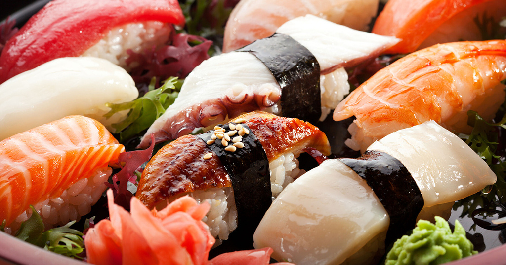
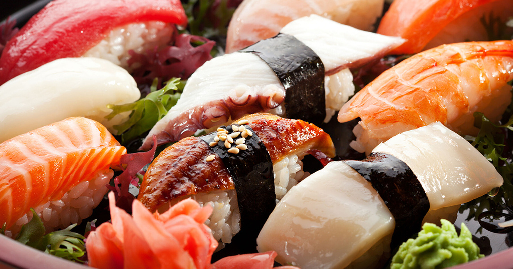

Introduction
|  |
« 🇫🇷Sécurité alimentaire », « 🇨🇳食品安全 » et « 🇯🇵食ã®å®‰å…¨Â  »
Voici une présentation de l’analyse automatique de ces trois mots dans le contexte de chacune des langue.
🇨🇳食品安全, 🇯🇵食の安全
|  |
Voici une présentation de l’analyse automatique de ces trois mots dans le contexte de chacune des langue.
Inalco.
Chargé de l'analyse du corpus japonais et gestion de la repositorie. Et responsable de l'assistance technique en informatique.
Etudiant en Master 1 TAL.
Don't like Front-end :(
Nanterre
Responsable pour l'analyse du corpus chinois
Etudiante en Master 1 Traitement Automatique des Langues (TAL). Elle est une pro de la sieste : "Dreams are my reality..."
Chargé de l'analyse du corpus français et de la rédaction des présentations. En tant qu'étudiant en TAL, la sécurité alimentaire est au coeur de ses préoccupations : après tout, rien ne nous empêche d'être bon vivant...